|
USA, New York, 1999-08 (See Map here)
The city I love in the US. All the diversity that you can find there is a
reason alone to visit the Manhattan Island.
All these tall buildings looks, to me, very relaxing. Since there are so
many people on the street all the time, it's very simple to be anonymous.
The people in the stores speak a lot of different language among them
selves, but all speak English to the customers. This makes me feel that not
all the citizens there are born in there. They, like me, loves Manhattan.
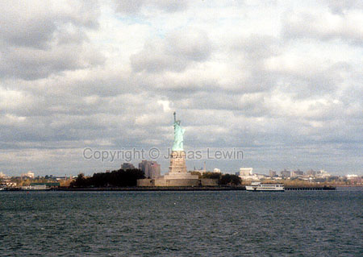Statue
of Liberty. The green lady that greets you when you are approaching
Manhattan from the Statten Island Ferries.
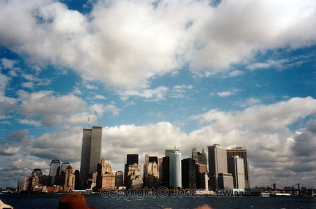I
could not find any specific food that you should try in New York, but I did
find a lot of Pizza-restaurants. The one I tried where a real fast food
place. The Pizza was almost warm there. The rats must be a problem in New
York. I saw a big rat in a waste basket, trying to get out. It probably just
had dinner. If the rats are roaming the streets, then how about under the
streets? Some things are better not known if you're a tourist. I can try to
give you a small tour of what I saw there, walking around for 9 hours (20
km).
Broadway. Just follow the street and you'll cover a lot of interesting
areas. Their theatres are probably the most famous place on Broadway.
World Trade Center. These buildings are huge. Very dull, but still very
tall. At the bottom levels you find a lot of market places. Very similar to
a common mall, but this is a very famous mall. Perhaps the most famous in
the world, what do you think?
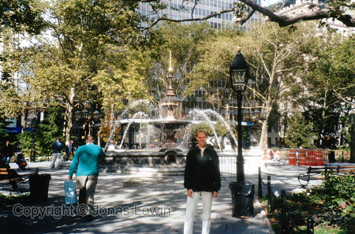City
Hall Park. The first park I encountered in Manhattan. Looking at the map, it
seems to be so big. Unfortunately it's very small and is not taken care of
very well. Still a good place to feed the birds if you fell like.
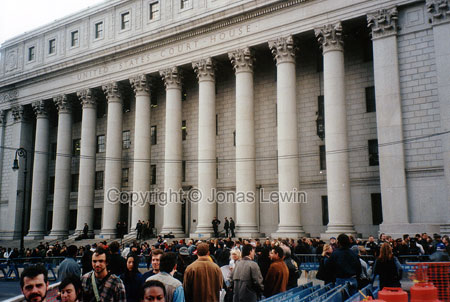City
Hall and Federal Building. At the time I was there, there was a lot of
commotion. A lot of people where protesting against some famous trial. I
expect this to be quite normal. The public always seems to think that they
know a lot more than the court does. Or they just want some attention.
Regardless, there are a lot of police officers watching the crowd, making
sure that there won't be a riot.
The buildings themselves are very big and tall, just like everything on
Manhattan. The only small buildings I saw, where the churches. This is since
they where built a long time ago.
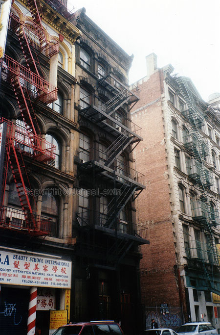Wall
Street and the Stock Exchange. The finance street of America. What ever goes
on in there will affect the rest of America, and possible the world; at
least in economics. There's a lot security around the Stock Exchange
building. Police officers around the building all the time. The building is
very nice, and well preserved. You won't get in, but worth a look from the
outside.
Pier 17. The greatest viewpoint in Manhattan at night. Very classy, and a
lot of expensive and stylish stores. The place to be during night, since
it's so beautiful. All the restaurants are look great. Try to get some time
to have dinner here.
Brooklyn Bridge. Just another bridge, but you get a very nice view over this
from Pier 17 at night.
China Town. Very bad living standard here. The stores looks just like the
ones in China. Of course there's a lot of Asian people here. So they are
probably used to the bad living standard. These are almost as bad as the
standard that some of the "black neighborhoods".
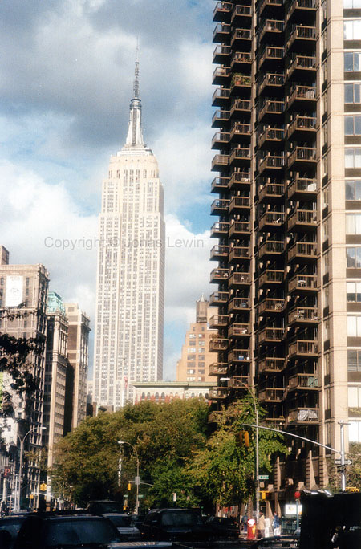Little
Italy. As the name states, there's a lot of Italian people here. If you want
to find some odd stores, this is the place to be.
Washington Square Park. Small park, but they have some actors performing
there quite often. Go there, and you'll probably find some entertainment
here. Bring a dollar to pay them, since they are performing for money.
Union Square. The small marketplace in Manhattan. If you feel like going
shopping for some pumpkins before Halloween, then this is going to be filled
with people thinking like you.
Madison Square Park. Simply a small park.
Empire State Building. You all know it from the King Kong movie. Tall
building, great architecture, and very characteristic lighting during night.
Very simple to see this from a distance, and very majestic. Still very plain
compared to KLCC in Malaysia.
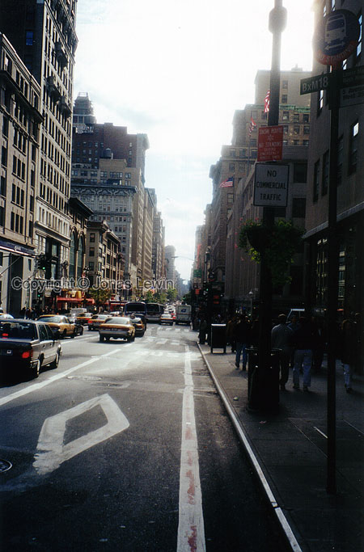As
we all know they have a lot of very straight streets in New York. Here I am
at 5th Avenue and West 35th Street. San Francisco where very straight, but
nothing compared to this.
Chrysler Building. This building has a very famous roof. Other than that,
it's just tall. That's about is for Chrysler Building.
UN Building. The least attractive place to see in Manhattan. Any Pizza place
is more interesting. Lots of security here; even more than the Stock
Exchange on Wall Street. The building it self is very plain, and tall. It's
located just by the water, which is the most interesting part of it.
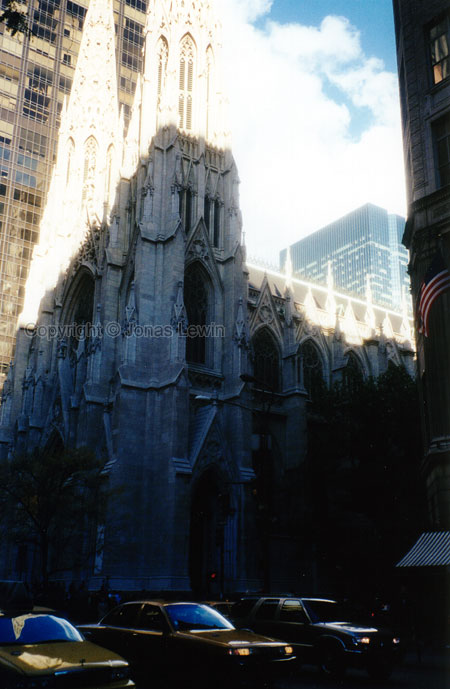St
Patricks Cathedral. My guess is that every day there is a wedding, since
this is one of the most famous churches in the world. Just when I was
passing the church, this newly wedded couple came out the doors. This scene
where very beautiful, although all the yellow cabs and busses where hurling
down the street, honking their horn on anyone not moving fast enough out of
their way.
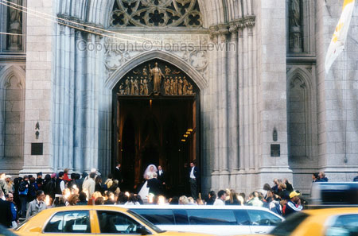
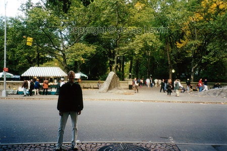Central
Park. Finally a big park in Manhattan. However, some parts of it has been
turned into a zoo, and you have to pay an entry fee. But it still feels nice
that they have preserved a park here, instead of creating all these tall
buildings all over the place. As you see it's a very green park, in the
center of New York.
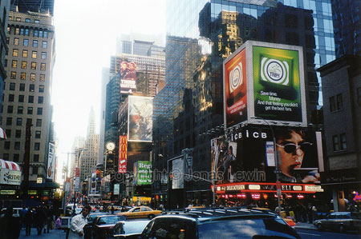Times
Square. The place to be at new years eve. Probably a few other people will
be there :-). Since the place is always filled with people, I don't want to
imagine what it will be like on that day. If any part of Manhattan ever
sleeps, then this most certainly doesn't. All these neon signs, and walking
lights makes this place what it has been famous for.
|
{kind=link}